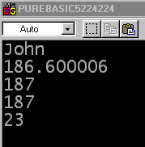

OpenConsole() name$ = "John" height.f = 186.6 weight.f = 80 age.w = 23 copy_height.l = height PrintN(name$) PrintN(StrF(height)) PrintN(Str(copy_height)) PrintN(Str(height)) PrintN(Str(age)) Input() CloseConsole() EndDie ersten vier Zeilen (nach dem OpenConsole() Befehl) legen den Wert der Variablen (auf der linken Seite des = Operators) fest, indem Strings und Zahlen direkt im Code eingegeben werden. Sie können nur die Werte von Variablen festlegen, so dass immer nur ein Variablenname auf der linken Seite des = Operators stehen darf, wenn Sie ihn für eine Zuweisung verwenden. Beachten Sie, dass Sie Strings in Stringvariablen und Zahlen in numerischen Variablen speichern müssen, oder der Compiler wird Ihnen eine Fehlermeldung anzeigen.
Die nächste Zeile zeigt, wie der Wert einer Variablen durch eine andere Variable festgelegt wird - es ist genau wie bisher, mit der Ausnahme, dass Sie einen Variablennamen auf der rechten Seite anstelle eines Wertes benutzen. PureBasic wandelt automatisch zwischen verschiedenen numerischen Typen um (copy_height ist ein Long und height ist ein Float).

Die nächsten fünf Zeilen (beginnend mit PrintN) zeigen Ihnen
die Werte der einzelnen Variablen sowie ein Beispiel der Befehle, die Sie
zum Anzeigen von Werten benutzen können. Offensichtlich sollen diese Werte
die Gleichen wie die sein, die wir im Code eingegeben haben. Die Ausgabe vom
Programm wird im Bildschirmfoto auf der rechten Seite gezeigt und die Zeilen des
Codes werden unten erklärt.
Zuallererst erinnern Sie sich daran, dass der Befehl PrintN() einen String
als Parameter erhält und ihn auf der Konsole ausgibt. Die erste Ausgabezeile zeigt die Variable
name$ an. Da dies ein Stringtyp ist, können wir den Variablennamen direkt als
Parameter übergeben und erhalten den Inhalt angezeigt. Wie Sie sehen können, wird "John" auf
der Konsole ausgegeben, so wie dies zu erwarten war.
Die nächste Zeile - PrintN(StrF(height)) - stellt die height Variable dar. Da numerische Variablen (in diesem Fall eine Fließkommazahl) keine Strings sind, müssen wir diese vor dem Anzeigen erst in einen String konvertieren. Der Befehl zum Konvertieren von Fließkommazahlen in Strings lautet StrF, welcher einen Parameter annimmt - die zu konvertierende Fließkommazahl. Dies ist der Grund, warum height (der Name der Fließkomma-Variable) in Klammern angegeben wird. Der StrF() Befehl gibt einen String zurück. Sie werden feststellen, dass jeder Befehl (PrintN und StrF) sein eigenes Set an Klammern besitzt, und sich der StrF Befehl innerhalb der Klammern von PrintN befindet. Dies bedeutet, dass der Parameter des PrintN Befehls das Ergebnis des StrF() Befehls ist, welches - wie oben beschrieben - ein String ist.
Die nächste Zeile lautet PrintN(Str(copy_height)). Diese stellt den Wert der copy_height Variable dar. Dies ist eine weitere numerische Variable, weshalb wir sie vor dem Anzeigen konvertieren müssen. Dieses Mal ist der Variablentyp ein Typ, welcher ganze Zahlen speichert. Um diese zu konvertieren, müssen wir den Str Befehl benutzen, welcher genau wie StrF arbeitet, außer dass in diesem Fall der Parameter ein Long ist. Der in der Konsole angezeigte Wert lautet "187", welcher - wie Sie vielleicht denken mögen - auch seltsam aussieht. Erinnern Sie sich jedoch daran, dass PureBasic automatisch zwischen Typen umwandelt, wenn Sie numerischen Variablen Werte zuweisen. Beim Konvertieren von Fließkommazahlen (Floats) in einen Typ zum Speichern von ganzen Zahlen wird automatisch auf die nächste (Ganz-)Zahl gerundet.
Die Zeile PrintN(Str(height)) zeigt, was passiert, wenn Sie den falschen Umwandlungsbefehl für eine Variable eines bestimmten Typs verwenden (in diesem Fall wird eine Fließkommazahl mit Hilfe des Befehls für ganze Zahlen umgewandelt). Was in diesem Fall geschieht, ist, dass PureBasic versucht, die Fließkommazahl in den als Parameter benötigten Typ umzuwandeln. Wie oben erwähnt, ist der Parameter zum Befehl Str ein Long-Typ, so dass es zum gleichen Effekt wie bei der vorherigen Zeile des Codes kommt.
| Vorheriges Thema | Kapitel-Inhalt | Nächstes Thema |
|---|---|---|
| Einführung | Benutzerhandbuch Inhalt | Addition |